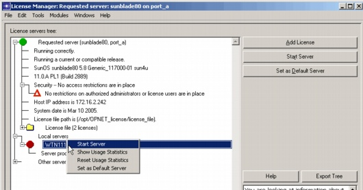
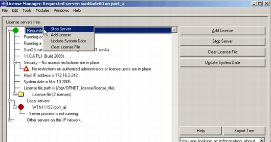
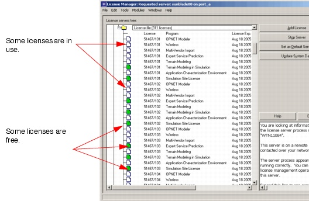
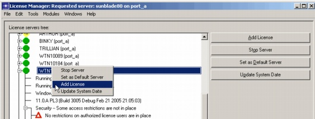
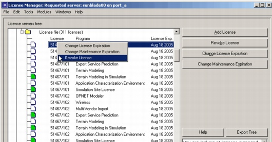
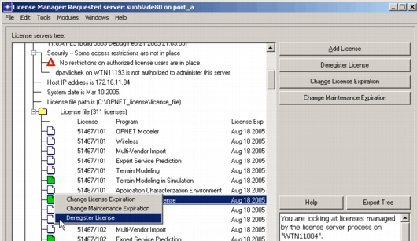

Licensing > License Manager > Operations
Operations
Operations fall into one of three broad groups:
- License Manager Operations (which are always available)
- Server Operations (the server of interest must be selected)
- License Operations (apply to a specific license or license file)
License operations are available from the drop-down menu. Many License Manager operations can also be accessed from a pop-up menu by right-clicking on a server, license file, or license icon in the treeview.
License Manager Operations
Export Tree (button)
The license tree can be exported to a tab-delimited text file using the Export Tree feature. This feature is useful for troubleshooting.
Convert License File (File menu, button)
Converts a pre-11.0 license file to a format the License Manager can use. After conversion, older license servers can use the license file, but you should only use the latest release of License Server to add or deregister licenses from the license file. You should convert the license file after the 11.0 installation process.
Note—The button to convert the license file is "Convert pre-11.0 License File".
Note—If a license file is in an old format and needs to be converted, all operations except Stop Server, Start Server, and Convert License File are disabled. See License File Format Conversion for more information.
Product Modules (Modules menu)
Lets you specify which product options to use. Only the product options for which you have purchased licenses can be selected from the list. (Specialized model licenses are not listed here, but will be used when discrete event simulations are run.)
Server Operations
Start Server (button)
Starts the selected server, allowing it to issue licenses and perform other license server functions. This button is active only when the selected server is your own (local) machine. To determine if a machine is local, type hostname in a shell window. See Procedure 3-5-Starting the License Server (Preferred Method) for details. You can also right-click on the server, and select "Start Server" from the pop-up menu. If the selected license server is already running, this button is not visible.
Figure 3-4 Right-Click Server Operations

Stop Server (button)
Stops the selected server. A server can be stopped even if running on a remote machine. See Procedure 3-10-Stopping the License Server (Preferred Method) for details. You can also right-click on the server and select "Stop Server" from the pop-up menu, as shown in Figure 3-4. If the selected license server is not running or is in standalone mode, this button is not visible.
Figure 3-5 Right-Click Server Operations

Update System Date (button)
Allows you to reset the license server's date, shown in the System Date field as described in Table 3-1, to the current date. Resetting the date requires that you contact technical support via either the Internet, e-mail, or phone/fax. You can also right-click on the server, and select "Update System Date" from the pop-up menu, as shown in Figure 3-5.
Note—You might need to perform this operation because the server's date is not the current date. This can occur even if the computer running the license server is set to the current date.
Set as Default Server (button)
Sets user preferences so that the selected server is the default server. This server will be the requested server the next time you start SP Guru Transport Planner, and the values of the
license_serverandlicense_portpreferences will correspond to this server. You can also right-click on a server other than the server you are currently using, and select "Set as Default Server" from the pop-up menu.Refresh Server Information (File menu)
Scans your network for license servers and rebuilds the tree.
Show Local Server's Usage Statistics (Tools menu)
Shows usage statistics for the local server.
Reset Local Server's Usage Statistics (Tools menu)
Resets the usage statistics for the local server.
Create License File (Button)
This button appears only if there is no license file on the computer where the license server is running. When you click this button, a new license file is created. It will not have any licenses in it. Use the Add License (button) to add licenses.
License Operations
The contents of the License file are displayed when you expand the License file folder under a selected server. You can right-click on a license file (when it is expanded to show the individual licenses) and sort the licenses for that server by license number, product type, status, or user.
Figure 3-6 Example License File

You can restrict who has access to the following operations by creating an admin_auth file. If you do not create such a file, any user has access to these operations from any machine. See Restricting License Server Administration for details. License operations are as follows.
Add License (button)
Allows you to add one or more licenses to a server. Requires that you contact technical support by Internet, e-mail, or telephone (voice or fax). You can also right-click on a server to add a license from the pop-up menu, as shown in Figure 3-7.
For detailed instructions on adding licenses, go to http://www.opnet.com/support and follow the "License Registration" link.
Figure 3-7 Add License from Pop-Up Menu

Revoke License (button)
Immediately revokes a license in use. The user of the license receives a warning and has two minutes to save files and exit the application.
Figure 3-8 Revoke License from Pop-Up Menu

Change Maintenance Expiration (button)
Lets you set a new maintenance expiration date. You can change maintenance expiration from the pop-up menu by right-clicking on the license. The maintenance expiration date determines
- The time period for which you have access to OPNET Technical Support.
- Which release of an application you can run. For example, suppose you have installed the newest version of SP Guru Transport Planner, which has a release date later than the maintenance expiration of a particular license. That license will not run the new release, though it will run earlier versions of SP Guru Transport Planner. Licenses with a later maintenance expiration can run the new release.
You can find detailed instructions on changing the maintenance expiration date on the Technical Support website. Go to http://www.opnet.com/support and follow the "License Registration" link.
Change License Expiration (button)
This button appears only if you select a permit that has an expiration. You cannot perform this function on a permanent permit. You can also right-click on a license and change its expiration.
You can find detailed instructions on changing the expiration date for a license on the OPNET Technical Support website. Go to http://www.opnet.com/support and follow the "License Registration" link.
Note—You can move a license from one license file to another. To do this you must first deregister the license from one license file, then add the license to the target license file. You can only deregister a license a certain number of times each year, as specified in your agreements with OPNET.
Deregister License (button)
This button removes a license from your computer. Typically, you will use this if the computer is about to be reformatted or decommissioned, or if you want to move the license to another license file. The button does not appear if you have selected a permit that is in use. You can also right-click on a license and deregister it from the pop-up menu, as shown in Figure 3-9.
You can find detailed instructions on license deregistration on the OPNET Technical Support website. Go to http://www.opnet.com/support and follow the "License Registration" link.
Figure 3-9 Deregister License from Pop-Up Menu

Clear License File (button)
This operation deregisters all licenses from the license file in a single operation. This button appears only if no licenses in the file are in use. The choice also appears on the pop-up menu when you right-click on a license file, if no licenses in the file are in use. You should contact OPNET Technical Support by e-mail, phone, or fax before performing this operation.
When should you use "Deregister License" or "Clear License File"?
These two choices perform the same operation but on a different scale.
- If you want to deregister all of your licenses in a single operation, use Clear License File. This deregisters all licenses in the license file at once, regardless of their contract number range. You must contact OPNET Technical Support by e-mail, phone, or fax before proceeding.
- If you want to deregister a selected license use the Deregister License operation and select which licenses will be removed from your license file. You do not need to contact technical support before performing this operation.
Deregister License is the recommended method, because you do not need to contact technical support. Select the license of interest, click on the Deregister License button, and then click Express. Follow the prompts to remove the licenses from your license file.
Register New License (Tools menu)
Same as the Add License button.
Validate License File (Button)
This button only appears in rare circumstances in which a license file has become invalid. An invalid license file cannot be used to issue licenses. You must contact technical support to use this operation.
| Home © 1987-2007 OPNET Technologies, Inc. All Rights Reserved. This software may be covered by one or more U.S. Patents. See complete patent notice in the Legal Notices section. OPNET Support Center |